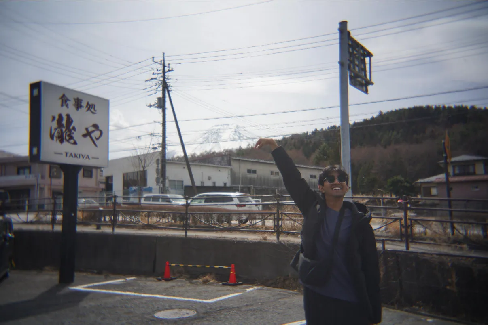
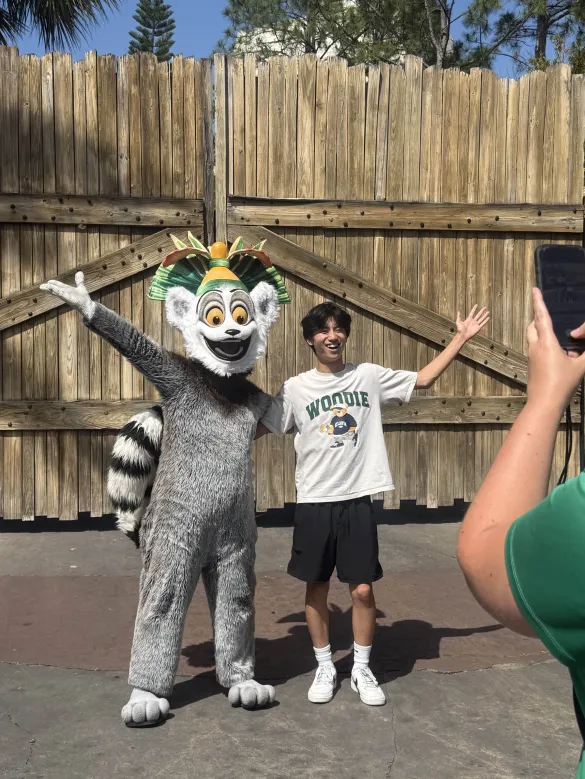
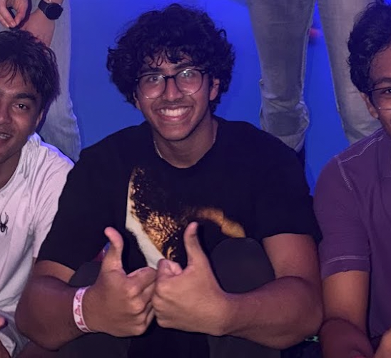
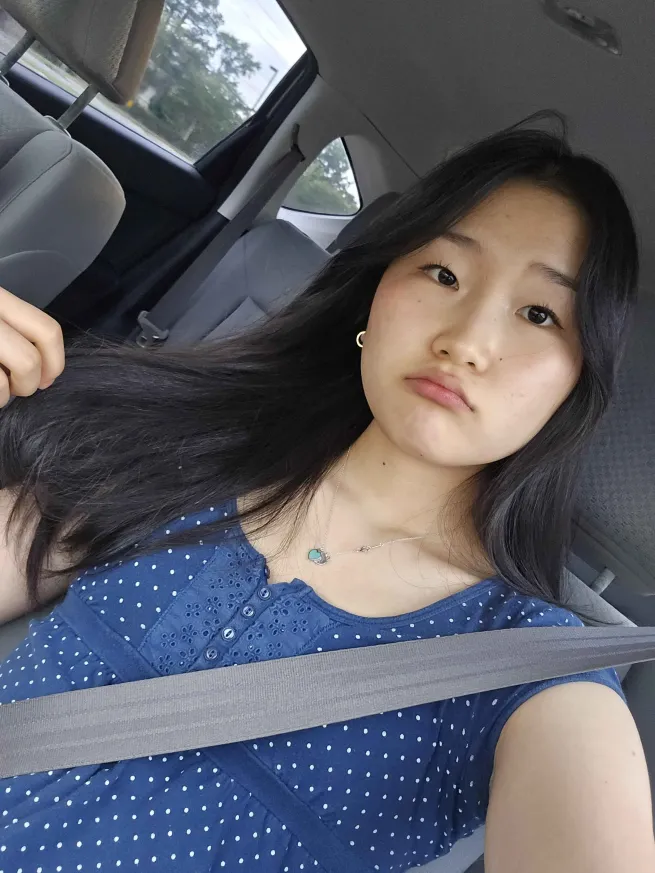

Directors
Ayush Patel

Daniel Bae

Co-Directors
Mithil Dalvaigari

Kaylee Jeon

Event Supervisors
Please refrain from contacting the event supervisors directly about event information. All questions should be directed to director@rsoi.org.
Aarush Kulkarni

Circuit Lab C
Adhrit Maiti

Meteorology B
Water Quality B
Aditi Venkatesan

Remote Sensing B
Agasya Mukkapati

Anatomy & Physiology C
Alan Cai

Codebusters B
Codebusters C
Alex Francavilla

Boomilever B
Ping-Pong Parachute B
Anandavel Sakthi

Food Science B
Andrew Geng

Dynamic Planet B
Anirudh Kalyanaraman

Elastic Launched Glider B
Thermodynamics C
Anirudh Pulugurtha

Codebusters C
Engineering Cad C
Anish Kunapareddy
Heredity B
Anatomy & Physiology B
Aryan Adappa

Botany B
Benjamin Hu
Meteorology B
Bird Xing

Astronomy C
Boomilever C
Brextyn Poetzel

Remote Sensing C
Brycen Nelson

Protein Modeling C
Thermodynamics B
Thermodynamics C
Catherine Ji
Ping-Pong Parachute B
Ping-Pong Parachute C
Chloe Zhang

Codebusters C
Crime Busters B
Mission Possible C
Claire Huang

Anatomy & Physiology B
Connor Chang

Dynamic Planet C
Remote Sensing C
Connor Siurek

Astronomy C
Danylo Fedkiv

Chemistry Lab C
Forensics C
Emmy Bonser

Rocks and Minerals B
Rocks and Minerals C
Water Quality C
Gianne Rimando

Crime Busters B
Experimental Design B
Giovanni Nicolai

Rocks and Minerals B
Rocks and Minerals C
Hana Ma

Hovercraft C
Write It Do It B
Iniya Karthik

Dynamic Planet B
Ishaan Acharya

Engineering Cad C
Thermodynamics B
Jasper Leung

Boomilever B
Jayaprakash Narayanan
Disease Detectives B
Solar System B
Jennifer Zhang

Disease Detectives C
Jerry Huang

Wright Stuff C
Jessica Wang

Boomilever C
Electric Vehicle C
Mission Possible C
Roller Coaster B
Junwoo Ryan Lee Kim

Hovercraft B
Kalicharan Sudhagoni

Write It Do It B
Keith Dai

Botany C
Chemistry Lab C
Designer Genes C
Ken Zeng

Anatomy & Physiology C
Designer Genes C
Lisa Zhang

Experimental Design B
Scrambler B
Luke Choi

Experimental Design C
Malachi Dawson

Water Quality B
Manasvi Nalasani

Anatomy & Physiology B
Disease Detectives B
Food Science B
Maximilian Zhang

Forensics C
Rocks and Minerals C
Minho Shin
Solar System B
Nandika Sagadevan

Ping-Pong Parachute C
Water Quality C
Nathan Tan

Circuit Lab B
Designer Genes C
Nina Zhang

Circuit Lab B
Olivia Lu

Heredity B
Protein Modeling C
Wright Stuff C
Owen Ye

Codebusters B
Raphael Esquivel

Circuit Lab C
Disease Detectives C
Roy Lin

Botany B
Shannon Imaoka

Food Science B
Remote Sensing C
Shubh Shah

Dynamic Planet C
Experimental Design C
Sivesh Dodda

Hovercraft B
Hovercraft C
Tim Qin

Wright Stuff C
Verna Acharya

Remote Sensing B
Vilius Staraitis

Elastic Launched Glider B
Electric Vehicle C
William Huang